Как установить Словоход на телефон, планшет и компьютер
Словоход работает прямо в браузере, скачивать из магазина ничего не нужно. Достаточно один раз добавить значок на экран, и дальше ребёнок открывает его, как обычное приложение.
1. Регистрация по приглашению
- Откройте личную ссылку-приглашение, которую вам прислали. Она действует только для одной семьи и после регистрации перестаёт работать.
- Введите своё имя, email и пароль. Запомните их: по ним вы будете входить на других устройствах.
- Добавьте детей и ответьте на короткую анкету о каждом ребёнке, по ней подбираются уровень и оформление. Придумайте четырёхзначный код каждому ребёнку и код для себя.
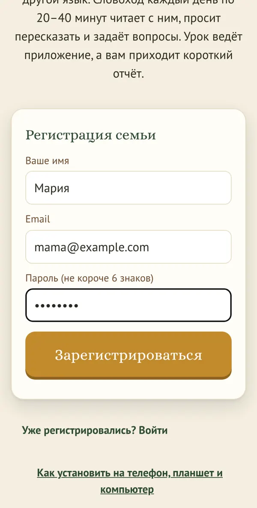
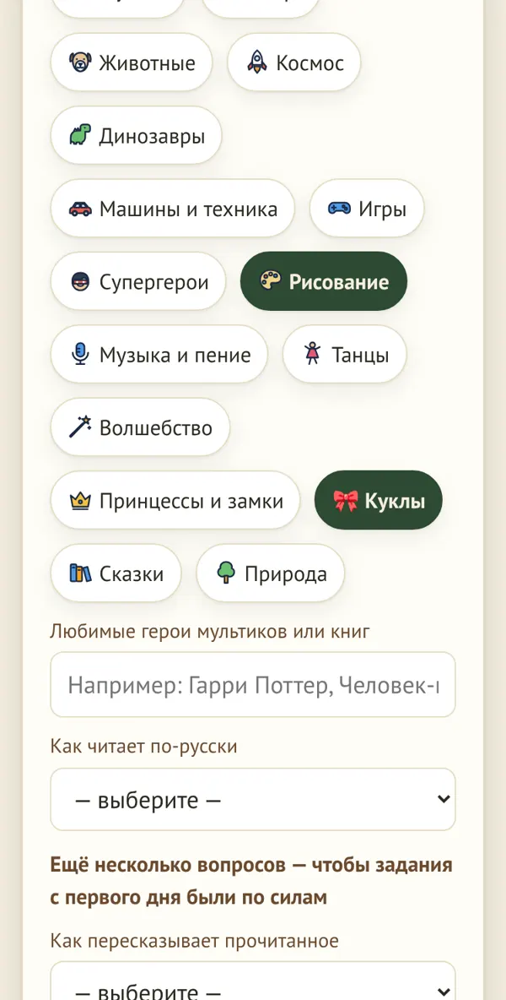
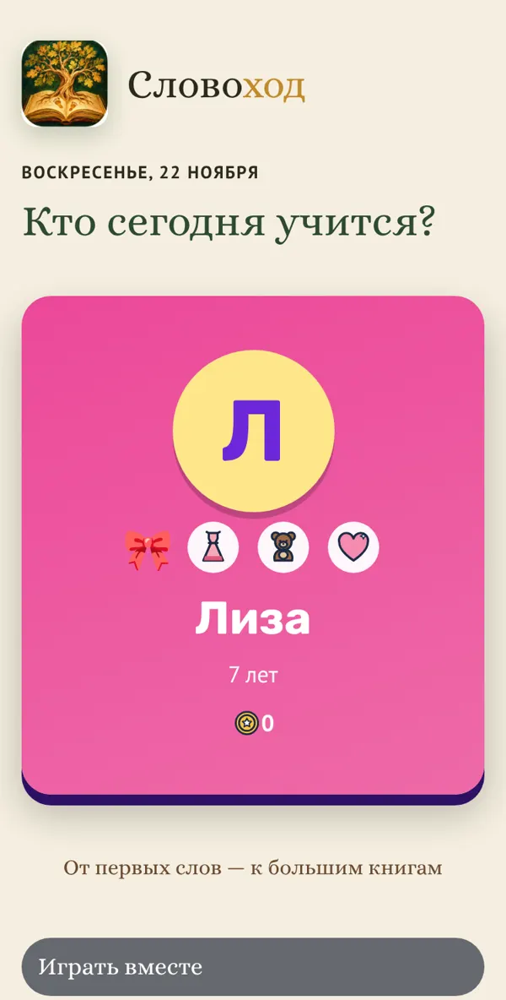
2. iPhone и iPad
- Откройте ссылку в Safari.
- Нажмите кнопку Поделиться, квадрат со стрелкой вверх. На iPhone она внизу экрана, на iPad вверху справа.
- Прокрутите список и выберите На экран «Домой».
- Нажмите Добавить. На экране появится значок «Словоход».
- Откройте Словоход через значок и войдите тем же email и паролем. Значок хранит свои данные отдельно от Safari, поэтому один раз войти нужно заново.
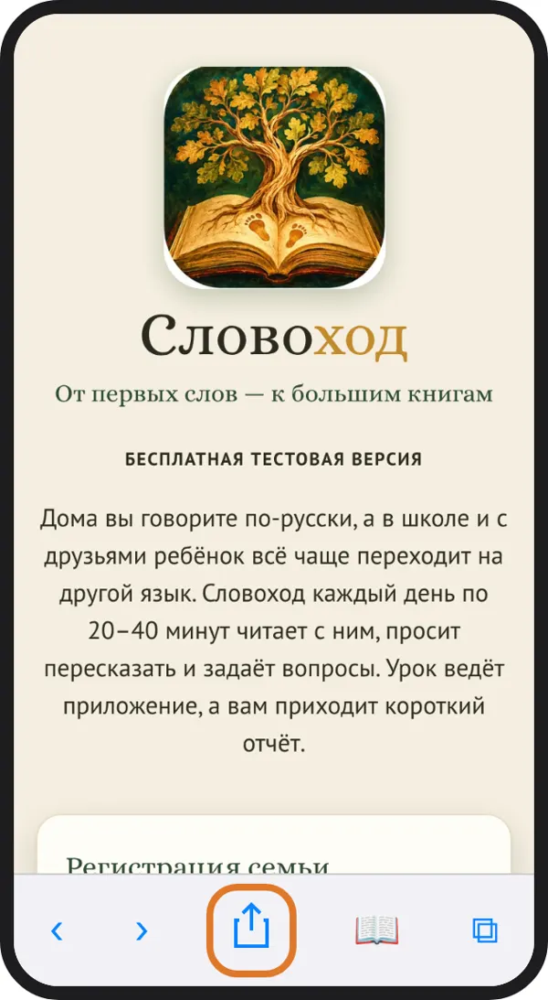
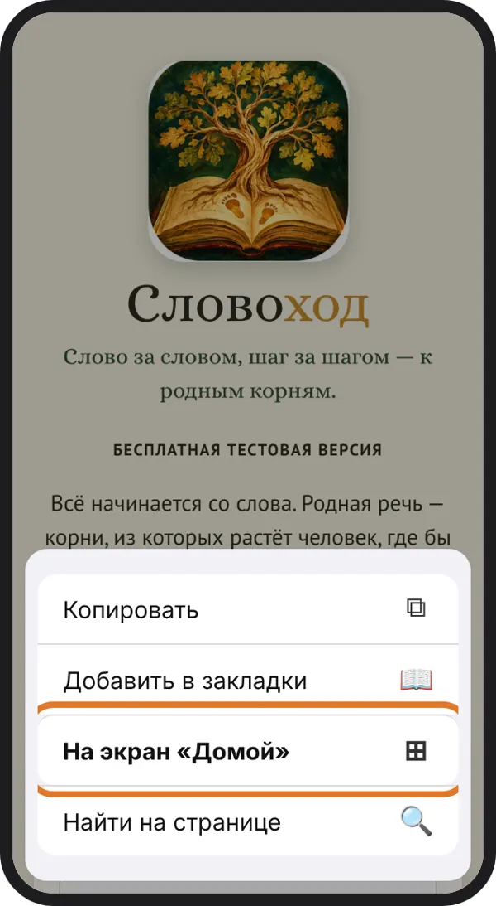
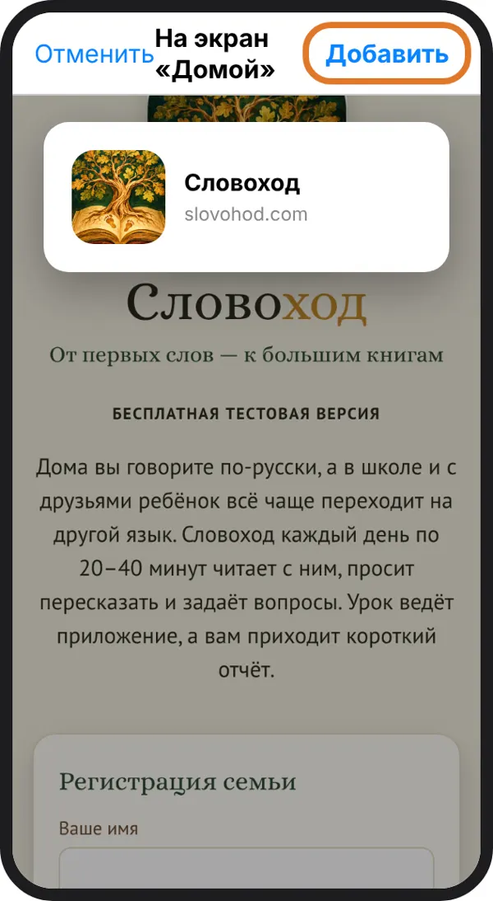
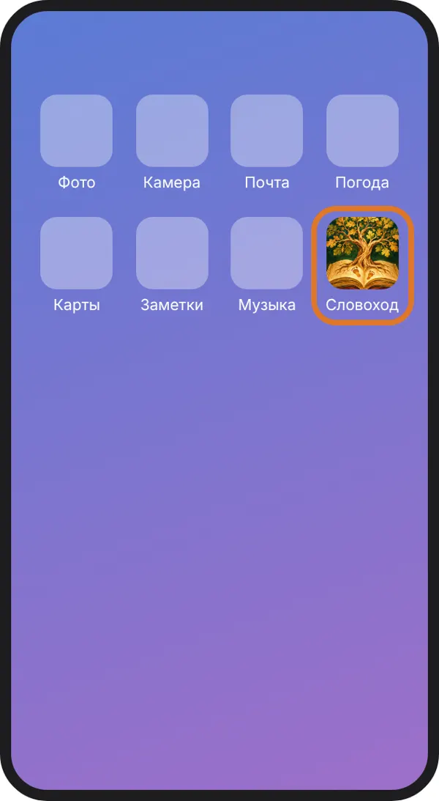
Сначала зарегистрируйтесь по ссылке в Safari, а уже потом добавляйте значок. Приглашение работает в том окне, где его открыли.
3. Телефон или планшет на Android
- Откройте ссылку в Chrome.
- Нажмите ⋮ справа вверху.
- Выберите Добавить на главный экран. В некоторых версиях пункт называется «Установить приложение».
- Нажмите Добавить или Установить. Значок появится на главном экране.
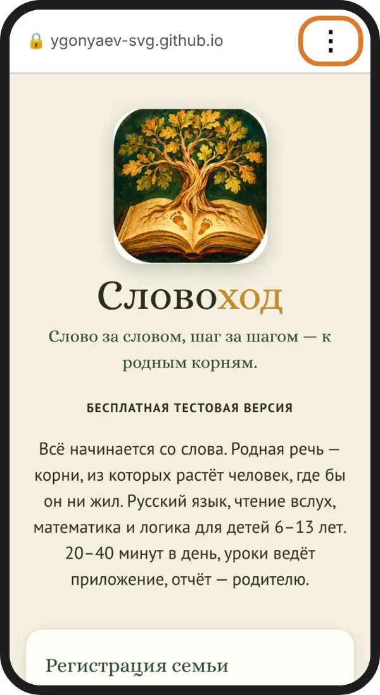
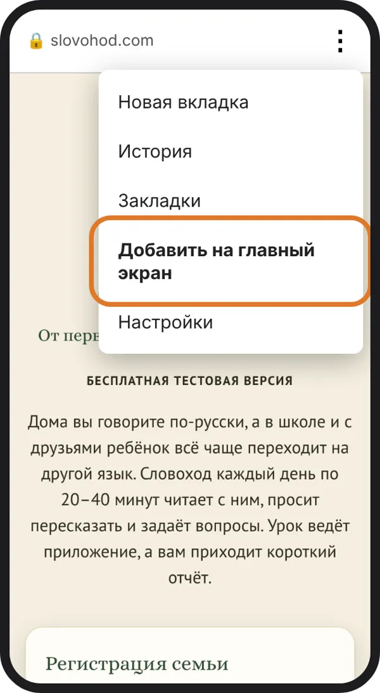
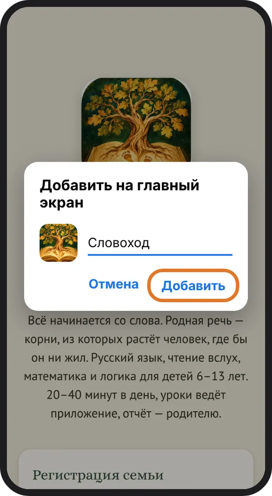
4. Ноутбук или компьютер
- Откройте ссылку в Chrome или Edge и войдите.
- Справа в адресной строке нажмите значок Установить, монитор со стрелкой. Если значка нет: ⋮, затем «Трансляция, сохранение и отправка», затем «Установить страницу как приложение».
- Словоход откроется в отдельном окне, а значок появится на рабочем столе и в меню программ.
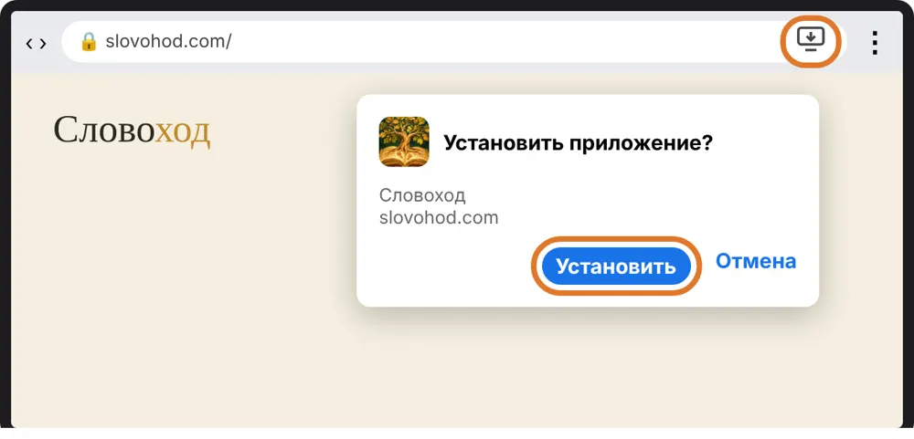
На Mac в Safari: меню «Файл», затем «Добавить в Dock». Можно и просто сохранить ссылку в закладки.
5. Микрофон для чтения вслух
Ребёнок читает вслух, а Словоход слушает и проверяет. При первом чтении появится вопрос про микрофон: нажмите Разрешить.
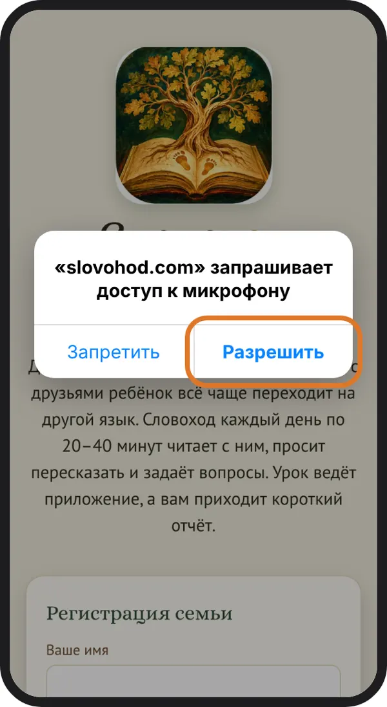
Если случайно нажали «Запретить», доступ можно вернуть:
- iPhone и iPad: Настройки, затем Safari, затем Микрофон, выберите «Спрашивать» или «Разрешить». Если Словоход открыт со значка, закройте его и откройте заново.
- Android: Chrome, затем ⋮, затем Настройки, затем «Настройки сайтов», затем Микрофон. Найдите в списке slovohod.com и разрешите.
- Компьютер: нажмите на замок слева от адреса, затем Микрофон, затем «Разрешить», и обновите страницу.
Распознавание речи лучше всего работает в Safari на iPhone и iPad и в Chrome на Android и компьютере.
Вопросы и пожелания пишите в разделе «Для родителей», вкладка «Настройки», блок «Отзыв о тестовой версии».